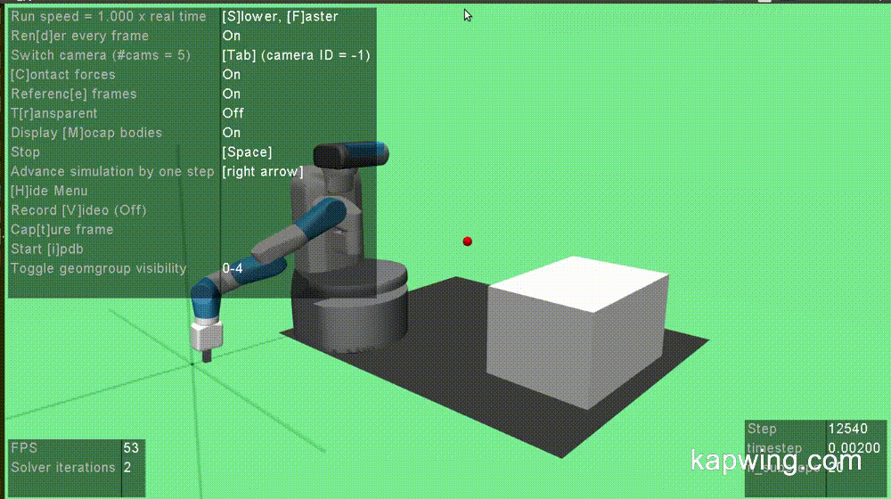

3 Dimensional Rapidly Exploring Random Trees Algorithm on Fetch Robot
April 2017

Description
This project uses Open AI's Robotics Environment for a Motion Planning problem. Rapidly exploring Random Trees (RRT) algorithm is implemented in a 3- Dimensional Space. Motion planing algoritm is implemented in the Fetch Robot Manipulator and the end-effector follows the planned path from a start to goal location.
Methodology
• Implemented 3-Dimensional RRT in a 3D space.
• Initiated the space with start and goal location.
• Fed the obtained path to the OpenAI’s Gym and made the end effector follow both the extend and connect version of RRT.
• Observed the path followed by the end effector in the space with and without obstacle.
• Computed the total cost of both extend and connect path for spaces with and without obstacles.
Results
We compare the cost of both paths, the generated one and the followed one. Ofcourse, the robot won't take the generated path because it is generated and more complex. It would rather follow a simple path with minimum breaks.
The figure below shows both, 1. The path randomly generetaed in red, and 2. The path followed in green for 3 dimensional space without any obstacles.

The table below shows cost incurred for paths in a 3D space without obstacle.

The figure below shows both, 1. The path randomly generetaed in red, and 2. The path followed in green for 3 dimensional space with obstacle.

The table below shows cost incurred for paths in a 3D space with obstacle.